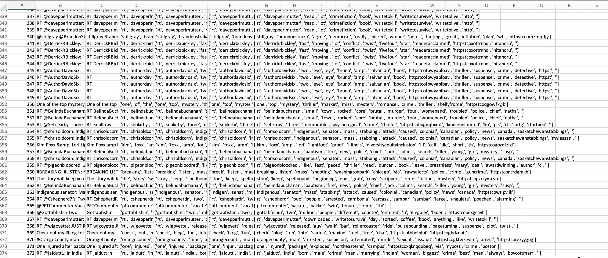
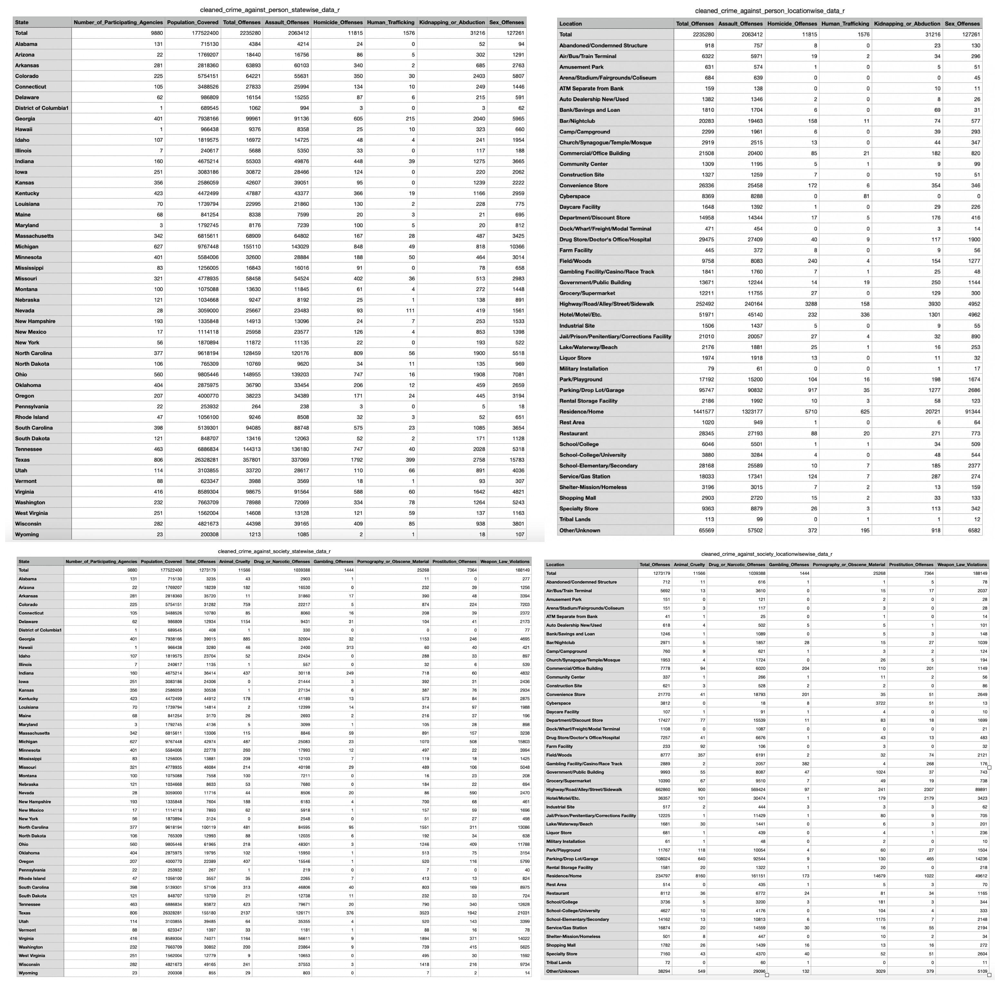
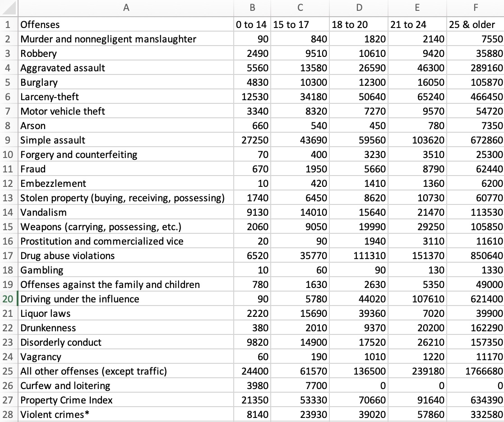

| Snippet of Clean Dataset |
Description |
| 
View
Download Clean CSV File
Download Raw CSV File
|
Python Code - Text Data
Python is used to clean up Twitter text data. In order to conduct an analysis of #crime, all of the columns in the dataset were removed, and the one column that remained was the text column. Tokenization from the NLTK library and Countvectorizer from the scikit-learn library are both used during this cleaning process.
Python Code
|
| 
View
Download Clean Crime by Person US States CSV File
Download Clean Crime by Person US Location CSV File
Download Clean Crime by Society US States CSV File
Download Clean Crime by Society US Location CSV File
|
R Code - Offenses in US Record Data
R is used to clean up data that has been labeled. Using R packages, unnecessary columns are removed and it is identified whether the dataset contains any NA values or duplicates. The information is used to find out where in the US crimes against people and crimes against society happen.
R Code
|
| 
View
Download Clean CSV File
Download Raw CSV File
|
R Code - Crime Age Record Data
R is used for cleaning up labeled record data. The data is cleaned using R packages to eliminate unwanted columns and to determine whether the dataset contains any NA values or duplicates. The data are used to figure out how crimes in the USA vary by age group.
R Code
|